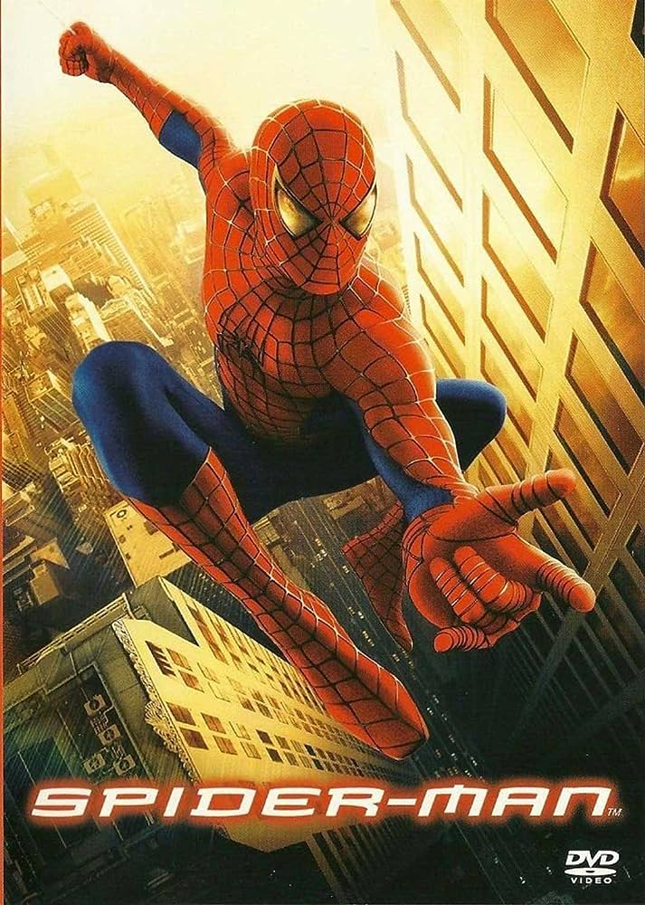

Il lancia-ragnatele dagli occhioni grandi, coscienzioso e spiritoso di Tobey Maguire era la dimostrazione che si poteva portare lo Spider-Man della porta accanto sul grande schermo. Poi è arrivato Tom Holland che ha rappresentato perfettamente il ragazzino insicuro, tormentato e risoluto dei fumetti e improvvisamente è sembrato di vedere il personaggio di Peter Parker per la prima volta. Il suo Spider Man cammina sempre in bilico tra la determinazione di fare qualcosa di speciale e la paura di rovinare tutto e deludere le persone. Ci sono ancora le battute e il sarcasmo, ma c’è soprattutto una grande vulnerabilità in lui, tanto che a volte è difficile decidere se vorresti esultare per le imprese fantastiche di questo giovane ragazzo oppure semplicemente abbracciarlo.
L'Uomo Ragno è stato trasposto come protagonista sul grande schermo in dodici occasioni tra il 2002 e il 2023 (tra cui tre film d'animazione, il secondo e terzo programmati per il 2023 e 2024, e otto live action). Progetti concreti legati agli adattamenti cinematografici sul supereroe sono stati messi in cantiere sin dal 1985, ma il primo film è uscito nelle sale cinematografiche solo 17 anni dopo, diretto da Sam Raimi e con Tobey Maguire nel ruolo del protagonista. Il film Spider-Man e i due successivi capitoli hanno dato vita ad una trilogia di grande successo, che ha ottenuto complessivamente circa 2,5 miliardi di dollari di incasso in tutto il mondo. Nel 2010, in seguito a dei naufragati progetti inerenti a Spider-Man 4, Spider-Man 5 e Spider-Man 6, è iniziata invece la produzione di un reboot della saga, con il film The Amazing Spider-Man, uscito a luglio 2012, diretto da Marc Webb e interpretato da Andrew Garfield, che ritornarono anche nel capitolo successivo, The Amazing Spider-Man 2 - Il potere di Electro.
Erano previsti due spin-off della saga The Amazing Spider-Man sui Sinistri Sei e Venom, tuttavia nel febbraio 2015 viene annunciato un accordo tra Sony Pictures Entertainment e i Marvel Studios per produrre un nuovo reboot di Spider-Man ambientato nel Marvel Cinematic Universe: il personaggio è apparso prima in Captain America: Civil War, e poi come protagonista di Spider-Man: Homecoming, uscito nel luglio 2017, Spider-Man: Far from Home, uscito nel luglio 2019 e, a dicembre 2021, Spider-Man: No Way Home, che raggiunge il miliardo di dollari d'incasso in pochi giorni.
A seguito di questo accordo la saga The Amazing Spider-Man viene cancellata, ma gli spin off sui Sinistri Sei e su Venom rimangono comunque in lavorazione. Nel marzo 2017 viene annunciato il primo film del franchise Sony's Spider-Man Universe Venom, uscito il 4 ottobre 2018 con Tom Hardy nel ruolo del protagonista Eddie Brock. Nell'ottobre 2021 esce un sequel, Venom - La furia di Carnage, mentre un terzo capitolo della saga, Morbius (con Jared Leto nel ruolo del protagonista Michael Morbius), è uscito il 31 marzo 2022.

Nell'aprile 2015 Sony annunciò che Phil Lord e Chris Miller stavano scrivendo e producendo un film d'animazione dell'Uomo Ragno dal titolo Spider-Man - Un nuovo universo ed era in fase di sviluppo presso la Sony Pictures Animation. Originariamente programmato per essere distribuito il 21 dicembre 2018, Sony annunciò il 26 aprile 2017 che il film sarebbe uscito una settimana prima, il 14 dicembre 2018. La presidente della Sony Pictures Animation, Kristine Belson, svelò il logo del film, con il titolo provvisorio Animated Spider-Man, al CinemaCon 2016, dichiarando che "concettualmente e visivamente [il film] aprirà nuove strade al genere dei supereroi". Il 20 giugno 2016 The Hollywood Reporter ha riferito che il film verrà diretto da Bob Persichetti, Peter Ramsey e Rodney Rothman. Il protagonista del film è Miles Morales, lo Spider-Man dell'universo Ultimate.